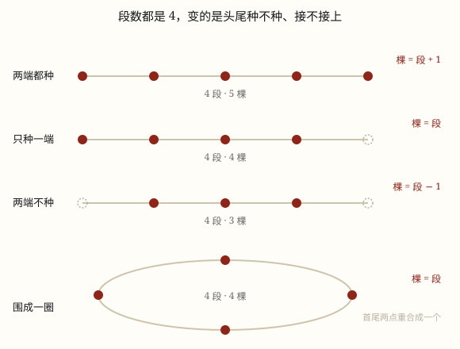

植树问题
植树问题不是四个公式，是一条线：先数段，再看点比段多 1、一样多，还是少 1。
| 所属主题 | 解决问题 |
|---|---|
| 所属模块 | 数与代数 |
| 课标学段 | 第三学段（5~6年级） |
| 前置知识 | 除数是一位数与除数是两位数的除法 |
| 核心素养 | 模型意识几何直观推理意识 |
教材定位
人民教育出版社《2024年版》
对应五上数学广角「植树问题」：两端都栽、一端栽、两端都不栽、封闭图形。
课标要求
| 数与代数·数量关系 | 能解决生活中的简单问题，并能对结果的实际意义作出解释，经历探索简单规律的过程（例14），形成初步的模型意识和应用意识。 印刷第 21 页 行为动词：运用 |
|---|---|
| 数与代数·数量关系 | 能运用常见的数量关系解决实际问题，能合理解释结果的实际意义，逐步形成模型意识和几何直观，提高解决问题的能力。 印刷第 24 页 行为动词：运用 |
说明
学校门口有一条 20 米长的小路，要在路的一侧种树，每 5 米种一棵，两头都种。很多同学张口就答：20 ÷ 5 = 4，4 棵。可只要把这条路画成一条线，每 5 米点一个点，你就会数出 5 个点——路被分成了 4 段，树却种了 5 棵。段是 4 段，树是 5 棵，差的那 1 棵，就是植树问题全部的秘密。
所以植树问题第一步永远是算段数：段数 = 全长 ÷ 间距。这一步是除法，四种情形一模一样，没有任何例外。段数出来之后，只剩一个问题要回答：这些树（点）比段数多几个、一样多、还是少一个。
两端都种：路的头和尾各种一棵，5 个点夹出 4 段，棵数 = 段数 + 1。只种一端：有一头是墙、是门、是站台尽头，种不了，棵数 = 段数。两端都不种：两头都种不了，棵数 = 段数 - 1。围成一圈：头尾接上了，最后一段的终点正好落在第一棵的位置上，棵数 = 段数。
把这四种情形并排画出来（图 1），你会发现它们不是四个公式，而是同一个模型在四个场合下的样子：先画出段，再数点，点是比段多 1、相等，还是少 1。会画图数的人根本不需要背公式；只会背公式的人，题目一换成「两侧都种」或者「围成正方形」，立刻就乱套了。
还有一类变形要认得出来：上楼梯、锯木头、敲钟，本质上是同一件事。从 1 楼走到 5 楼，只走了 4 层楼梯；把一根木头锯成 5 段，只要锯 4 次。楼层是点，层高是段；段数比点数少 1。看到「几次」「几层」这样的字眼，先想一想它说的是点还是段。
使用场景
小区绿化和道路：绿化带一侧栽行道树、路边立路灯、广场边上摆花箱，都要先算「隔多远一个、一共几个」。
地铁站台和桥梁：站台护栏的立柱、天桥的栏杆、隧道里的照明灯，安装位置都是等距离排开的，两头装不装要看现场。
校园活动布置：环形跑道插彩旗、走廊挂灯笼、操场四周摆花盆，围成一圈的数量和直直一排的数量算法不一样。
共享单车停车桩：人行道边上一排停车桩，桩与桩之间留出取车的空当，装几个桩、留多宽，就是这道题。
日常生活里的「几次」：上楼梯、锯木头、剪绳子、敲钟，问的都是段数与次数的关系，是植树问题的另一张脸。
注意点
先看清「种哪一头」。题目里「两端都种」「只种一端」「两端都不种」「四周都种」，这几个字直接决定 +1、不变还是 −1，读题时把它们圈出来再动笔。
「一旁」和「两侧」差一倍。题目说「小路两旁都种」，算出一旁的数量后要再乘 2；只写「一侧」「一旁」就只算一遍，别多乘。
围成一圈时不要再加减 1。环形、圆形花坛、正方形四周都是封闭的，首尾那个点已经重合，棵数 = 段数。如果非要一条边一条边地数正方形，四个角会被数两遍，最后要减掉 4。
单位先统一。全长 1 千米、间距 20 米，要先把 1 千米化成 1000 米再除，否则会算出 0.05 段这种荒唐的结果。
反着问也要会。已知棵数和全长求间距，先想「一共几段」：两端都种时 段数 = 棵数 - 1，再用 全长 ÷ 段数；只种一端时 段数 = 棵数。
为什么是这样

图 1：段数都是 4，只因为头尾种不种、接不接上，棵数才变成 5、4、3、4
算理推导
伸出你的一只手，五指张开。数一数：手指 5 根，手指之间的缝只有 4 个。手指就是「点」，指缝就是「段」，这一点差别，就是全部秘密。
为什么缝比手指少 1？因为最左边那根手指的左边没有缝，最右边那根手指的右边也没有缝；每一个缝都被两根手指夹在中间。5 根手指，只能夹出 4 个缝——这就是「两端都种，棵数比段数多 1」。
现在把 20 米的小路想成一条长条，每 5 米一个点：20 ÷ 5 = 4 段，正好 4 个缝。两端都种，相当于把 5 根手指摆上去，4 + 1 = 5 棵。
如果有一头种不了呢？把最边上一根手指收起来，剩下 4 根手指、4 个缝——点数和段数一样多，这就是「只种一端」。两头都种不了，再收一根，3 棵对 4 段，点比段少 1。
围成一圈又不一样了。把 5 根手指弯成一个圈，首尾那两根手指并成了一根，缝也跟着首尾相连变成 5 个——点和段一样多。所以环形、圆形花坛、正方形四周，都按 棵数 = 段数 算。
四句话归成一句：先数段，再看头尾。段数永远是 全长 ÷ 间距；头尾都种多 1，种一头相等，都不种少 1，围成圈相等。图画出来数一遍，比背四条公式可靠得多。
动手实验
剪一条 30 厘米长的纸条，从一头开始每 5 厘米画一个点，一直画到另一头，你会得到 7 个点、6 段。然后做三次改动：擦掉右边那个点，数一数变成 6 个点（段还是 6 段）；再把左边那个点也擦掉（5 个点对 6 段）；最后把纸条的两头用胶带粘起来变成一个纸圈，沿着圈数点，你会发现点又变回 6 个，和段数一样多。同一张纸条，只是「头尾种不种」「接不接上」变了，数量就跟着变，这就是四种情形唯一的区别。
按场景的例题
例 1（场景：绿化照明） 小区绿化带栽桂花树
小区里一条 96 米长的绿化带，沿一侧每隔 8 米栽一棵桂花树。两端都栽，需要多少棵？如果两端都不栽呢？
解：96 ÷ 8 = 12 段。两端都栽：12 + 1 = 13 棵；两端都不栽：12 - 1 = 11 棵。段数没变，变的只是头尾种不种。
答：两端都栽 13 棵，两端都不栽 11 棵。
例 2（场景：校园生活） 环形跑道插彩旗
学校环形跑道一圈 400 米，沿跑道每隔 25 米插一面彩旗，起点也插。一共要多少面？
解：跑道是封闭的圈，起点和终点是同一个点，不用加减 1。400 ÷ 25 = 16 段，棵数 = 段数 = 16。
答：一共 16 面。
例 3（场景：工程建造） 地铁站台装护栏立柱
地铁站台长 120 米，沿站台边缘装护栏，每隔 6 米立一根立柱。站台两头是墙，不能立柱，一共要多少根？
解：120 ÷ 6 = 20 段。两头不立，点比段少 1：20 - 1 = 19 根。
答：一共 19 根立柱。
例 4（场景：行程出行） 共享单车停车桩
人行道一侧装共享单车停车桩，这一侧从头到尾长 60 米，两端都装，一共装了 11 个桩。相邻两个桩相距多少米？
解：11 个桩之间只有 11 - 1 = 10 段。60 ÷ 10 = 6 米。
答：相邻两个桩相距 6 米。
常用推论
两端都种：棵数 = 全长 ÷ 株距 + 1。
只种一端，或围成封闭图形：棵数 = 全长 ÷ 株距。
两端都不种：棵数 = 全长 ÷ 株距 - 1。
反求全长和株距：两端都种时 段数 = 棵数 - 1，全长 = 株距 × 段数，株距 = 全长 ÷ 段数；只种一端时 段数 = 棵数。
楼梯、锯木、敲钟：段数 = 点数 - 1。上到 5 楼只走 4 层，锯成 5 段只锯 4 次，敲 5 下只有 4 个间隔。
正方形四周分边数：棵数 = 每边棵数 × 4 - 4，四个角各被数了两遍，所以要减 4。
易错点
错一条 20 米的小路，每 5 米种一棵，两端都不种，算成 20 ÷ 5 + 1 = 5 棵。
为什么错「两端都不种」是点比段少 1，加 1 把它变成了「两端都种」的算法。加号减号用反，结果正好差 2 棵。
正确20 ÷ 5 = 4 段，4 - 1 = 3 棵。画个图数一数，路中间只有 3 个能种的位置。
错环形跑道一圈 400 米，每 25 米插一面旗，算成 400 ÷ 25 + 1 = 17 面。
为什么错跑道上没有「头」也没有「尾」，起点那一面和终点那一面是同一面，加 1 会多算一面。
正确400 ÷ 25 = 16 段，环形 棵数 = 段数 = 16 面。
错小路一侧两端都种共 13 棵，题目说的是「两旁都种」，答案仍写 13 棵。
为什么错「一旁」和「两旁」差一倍，算完一侧忘了乘 2。这是应用题里最常见的漏读条件。
正确一侧 13 棵，两旁 13 × 2 = 26 棵。
错从 1 楼走到 5 楼，算成走了 5 层楼梯，用 5 × 每层台阶数。
为什么错1 楼是出发点，不用走楼梯。楼层是点，楼梯层数是段，段比点少 1。
正确5 - 1 = 4 层。同理，锯成 5 段只要锯 4 次，敲 6 下只有 5 个间隔。
直观理解
把一条路想成一把拉开的卷尺，刻度是点，刻度之间的格子是段。两端都种，就是两个端点都用上；只种一端，就是有一头被墙挡住了；两端都不种，就是两头都顶着墙；围成一圈，就是把卷尺的两头接起来，第一个刻度和最后一个刻度重合成一个。手指与指缝、尺子与格子、队伍与人缝，说的全是同一件事。所以真正要记的只有一句：先数段，再数点。
先数段，再数点；两头都种多一个，只种一头恰相等，两头不种少一个，围成一圈也相等。